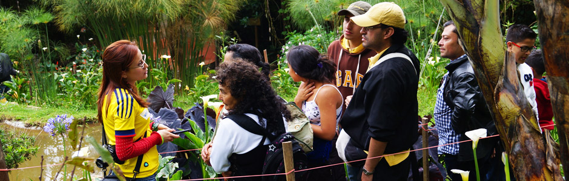
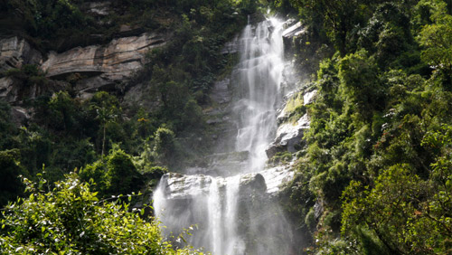
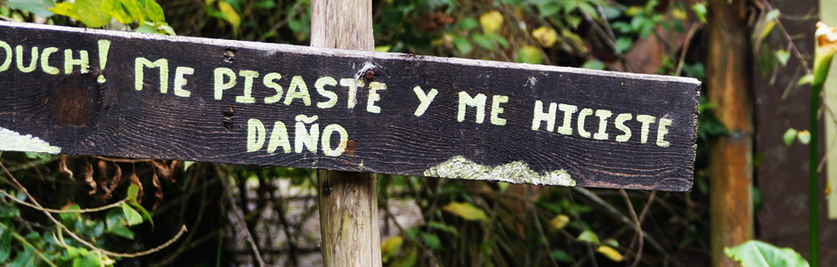

ECOTURISMO
A 38 kilómetros de la ciudad de Bogotá, en el departamento de Cundinamarca, nace en Colombia el primer proyecto ecológico que integra el cuidado del medio ambiente, el cuidado de la gente y la interacción del conocimiento con el contagio positivo y con la bioconstrucción, logrando así innovación pura.
VISITA PERSONALIZADA PARA GRUPOS:

Puede visitarnos en grupos familiares, empresariales, colegios y universidades, de acuerdo con su organización se dará una charla introductoria sobre el proceso de La Minga como territorio para la conservación y protección del medio ambiente, la interacción del conocimiento, el contagio positivo y la innovación pura.
Posteriormente, se realiza un tour por nuestras bio-construcciones y sistemas de permacultura, luego de esto un refrigerio de bienvenida hecho con alimentos saludables y ancestrales que producimos y transformamos en La Minga.
Con una salida de la duración de un día, los participantes tendrán la oportunidad de cambiar su manera de ver el mundo.
Podrán meditar y contemplar la naturaleza desde los techos verdes, descubrir como funcionan los baños secos, aprender el manejo consciente de aguas.
Generaremos conciencia ambiental, pero sobre todo inspiraremos y produciremos sentido de pertenencia con una charla del famoso conferencista Pedro Medina.
Les sacaremos mas de una sonrisa mientras aprenden a través de la práctica la importancia de trabajar en grupo, del esfuerzo y la dedicación.
PLAN CAMPESINO POR UN DÍA
¿Siempre ha soñado con disfrutar del campo y ser parte de la naturaleza?La Minga ofrece esta oportunidad "CAMPESINO POR UN DIA" para apropiarnos del trabajo del campo, alimentar los animales, sembrar, abonar, cosechar y aprender a transformar alimentos haciendo pan natural, quesos, yogurt, mermeladas y postres.
Este plan incluye disfrutar del entorno de La Minga, refrigerio de bienvenida y almuerzo. No incluye transporte.
Tarifa: $35.000 por persona.

PAQUETE MINGA Y CHORRERA
Conoce la cascada más alta que tiene Colombia "LA CHORRERA", con 590 metros de caída interrumpida, caminaremos por un sendero indígena de más de 200 años de construido, disfrutando de unos paisajes increíbles, donde observaremos vegetación de páramo, bosque alto Andino, nacimientos de agua, cascadas que surcan las montañas, vegetación, fauna nativa y la gran Cascada.
Luego, llegaremos a La Minga donde almorzaremos y haremos el reconocimiento de nuestro territorio como centro de conservación y paz.
Tarifa: $90.000 por persona.
Incluye transporte Bogotá – La Minga – Bogotá.
RECOMENDACIONES GENERALES PARA LA VISITA

• Regla de Oro: "No hagas a los demás lo que no quieres que te hagan a ti", en "los demás" incluimos todas las especies vivas.
• Traer protector solar y ropa para el campo: botas, gorra, chaqueta impermeable y ropa de cambio.
• Abstenerse de traer objetos que contaminen el medio ambiente.
• No es necesario traer agua en botella, se puede tomar agua natural.
• Caminar sólo por los senderos establecidos para proteger la vegetación.
• La Minga es la primera casa en barro en más de 70 años en Choachi, queremos que dure 700 más, el barro se desborona con facilidad, por ende favor tener cuidado con las paredes.
• Para servicio de baño se usan nuestros baños secos.
• El techo verde es un lugar para meditar, contemplar la naturaleza y tomar el sol, por favor mantenerse en los senderos y las plataformas de madera.
• Puede ingresarse a la quebrada, tener cuidado con piedras resbalosas.
La Minga Choachí - Cundinamarca -Colombia Cel: (57) 314 492 04 80 e-mail: laminga2013@gmail.com
Specially made by: